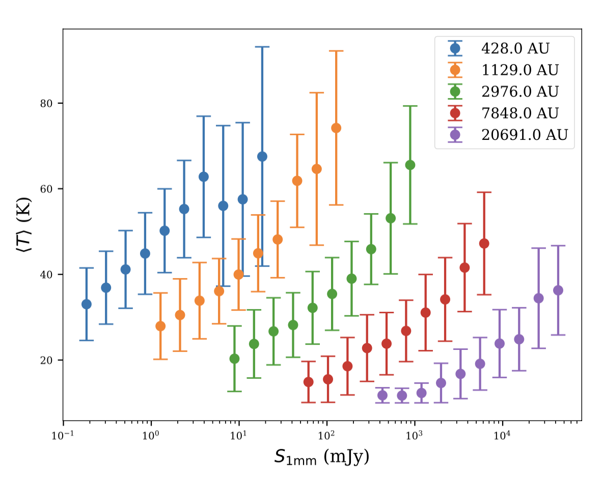
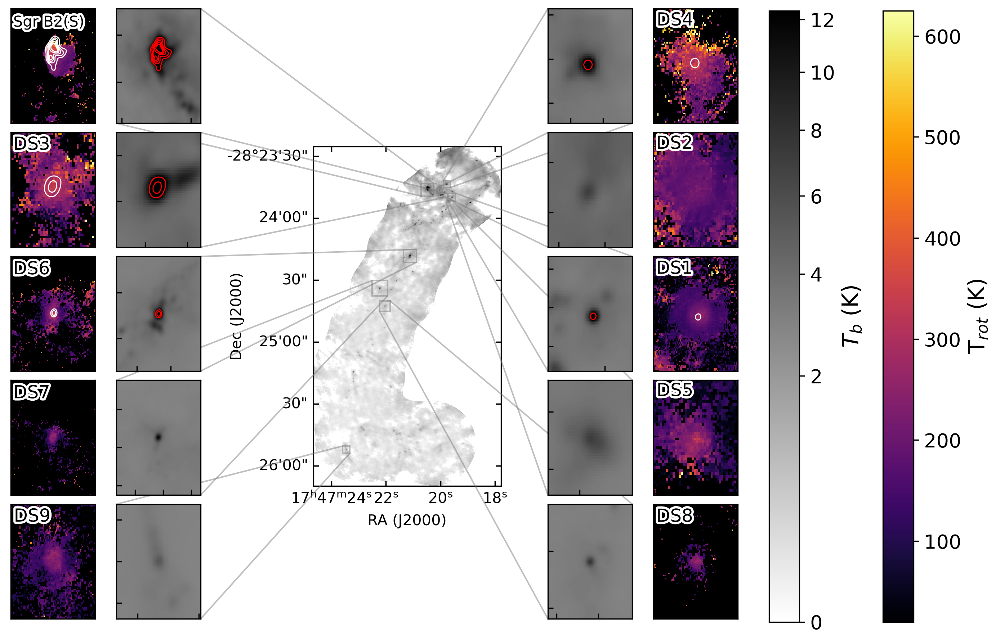
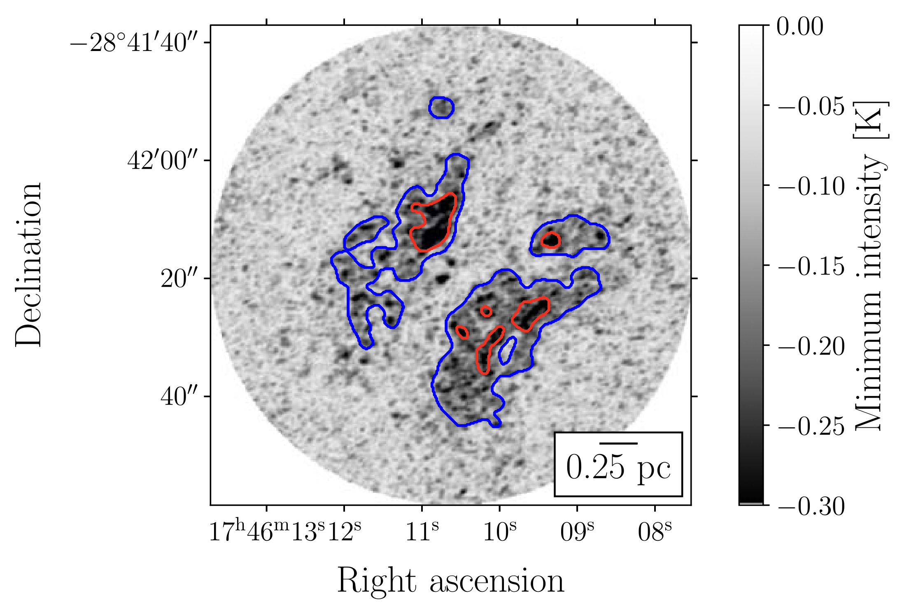
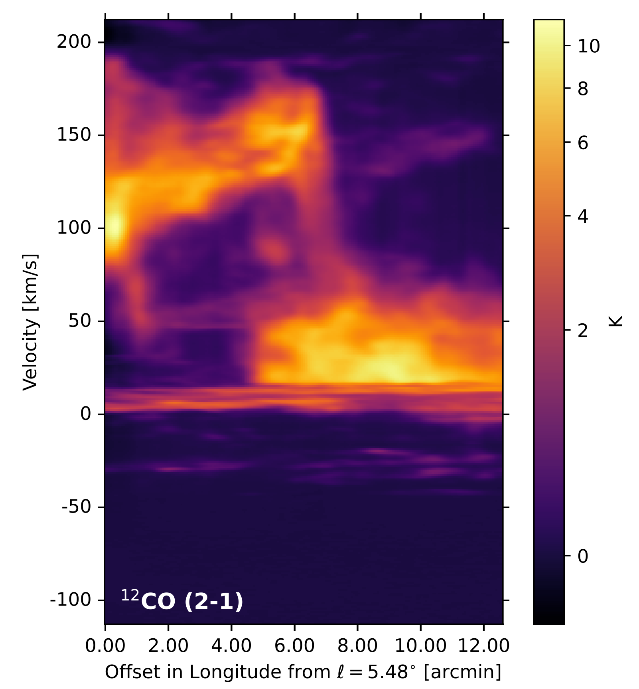
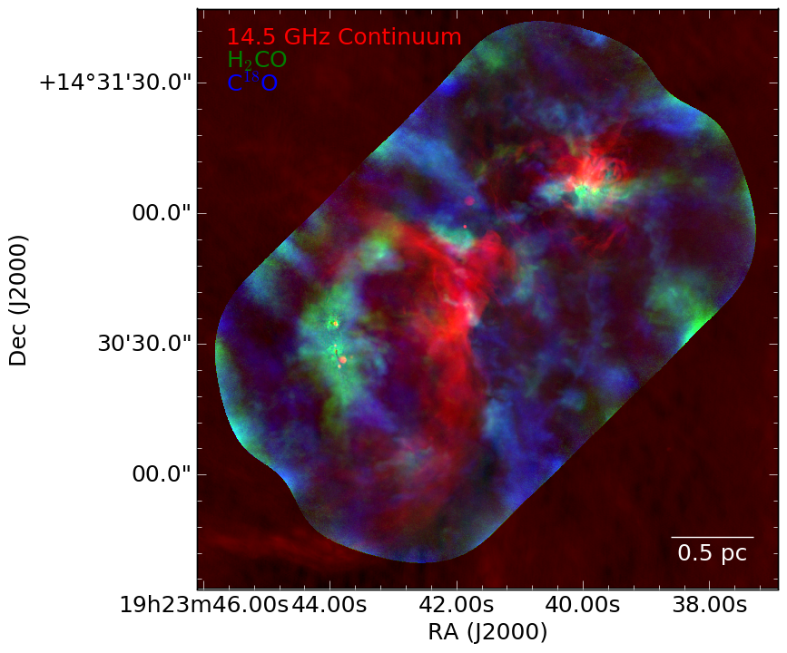
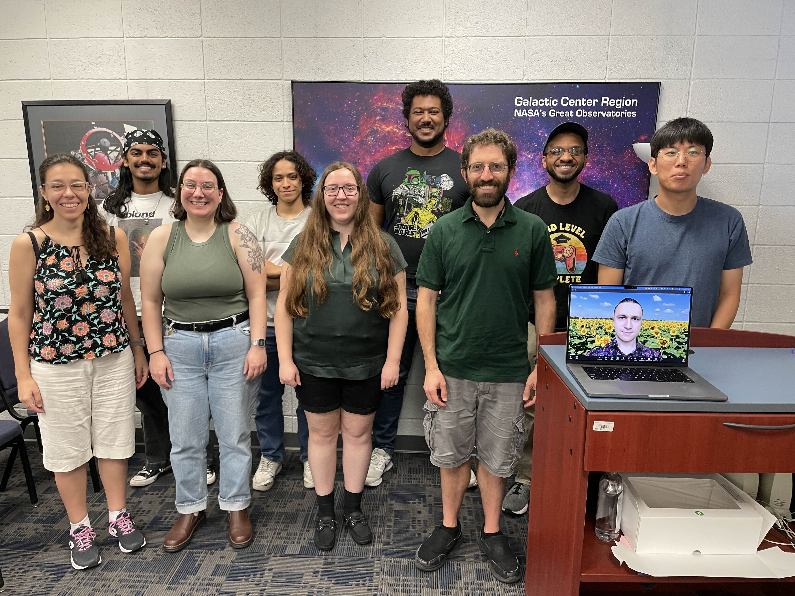

Research Highlights: Graduate Students & Postdocs
My group's graduate students and postdocs research high-mass star formation,
astrochemistry, and galactic structure using the world's most advanced telescopes, including ALMA, JWST, and the VLA.
PhD GraduatesDr. Theo Richardson - Young Stellar Object ModelsPhD Thesis: "Protostellar Evolution Models and Synthetic Observations" (2025)Key Publication: Updated Grid of YSO Models (Robitaille Grid) Research Focus: Theory, protostellar evolution models, synthetic observations Theo's updated and improved theoretical models of young stellar objects (YSOs) that are essential for interpreting observational data. His updated Robitaille grid provides crucial tools for the astronomy community to understand how protostars evolve and what we should expect to see with current and future telescopes.  Figure 9: Temperature correction factors for 'typical' YSO models (Figure 9 from: Richardson et al. 2024, ApJ, 961, 188) Dr. Desmond Jeff - Hot Cores in Sagittarius B2PhD Thesis: "Star Formation in the Central Molecular Zone" (2025)Key Publication: Ten New Hot Cores in Sgr B2 DS Research Focus: ALMA observations, hot cores, chemistry, Sgr B2 DS Desmond discovered ten new hot cores (high-mass protostars) in the Deep South region of Sagittarius B2, the most massive star-forming cloud in our Galaxy's center. This work helps us understand how star formation differs in the extreme environment of the Galactic Center compared to our local neighborhood.  Hot cores in Sgr B2 Deep South (Figure from: Jeff et al. 2024, ApJ, 962, 48) Dr. Alyssa Bulatek - Molecular Line Surveys in The BrickPhD: Completed March 2026Key Publication: Methanol Dasar in G0.253+0.016 ("The Brick") Research Focus: ALMA observations, chemical line survey, The Brick Alyssa identified a methanol line as a "dasar" (the opposite of a maser - absorption instead of emission) in The Brick, a dark cloud in the Galactic Center. She surveyed the chemistry of this extreme environment through a comprehensive molecular line survey.  Methanol dasar absorption against the cosmic microwave background in The Brick (Figure from: Bulatek et al. 2023, ApJ, 956, 78) Dr. Nazar Budaiev - Young Stellar Objects in Sgr B2PhD: Completed February 2026Key Publication: Hundreds of YSOs in Sgr B2 Research Focus: Sgr B2 star formation at high-resolution with VLA, ALMA, and JWST Nazar discovered hundreds of young stellar objects in Sgr B2 using multi-wavelength observations. He led a JWST Cycle 3 program to map Sgr B2; the first results paper was featured in a NASA/STScI press release. 
High-resolution ALMA observations showing hundreds of protostellar cores in Sgr B2 (Figure from: Budaiev et al. 2024, ApJ, 961, 4) Current Graduate StudentsSavannah Gramze - Galactic Bar StructureKey Publication: Colliding Gas Flows Along the Galactic BarResearch Focus: Structure of the Galactic Center and bar with ALMA Savannah found evidence of colliding gas flows along the Galactic bar, revealing how our Galaxy's structure channels material toward the center and influences star formation throughout the disk.  Figure 8: Position-velocity diagram showing evidence of cloud-cloud collision in G5 (Figure 8 from: Gramze et al. 2023, ApJ, 959, 93) Taehwa Yoo - Pre-IMF Measurements in W51Key Publications: Core Fragmentation in W51 (ALMA-IMF XX), A JWST NIRCam/MIRI View of W51AResearch Focus: W51 cores at high resolution with ALMA and JWST Taehwa is measuring the pre-initial mass function in W51, one of the most massive star-forming regions in our Galaxy. He leads a JWST Cycle 3 program to measure the (pre)IMF in W51; the first images from that program were featured in a UF press release.  Multi-line ALMA observations of W51 showing molecular gas and star formation tracers Postdoctoral ResearchersDr. Theo Richardson (2025-)Research Focus: Theory, protostellar evolution models, synthetic observationsTheo continues in the group as a postdoc after completing his PhD in 2025. He published the framework linking star formation to radiative transfer models, building on his updated grid of YSO models. Dr. Miriam Garcia Santa-Maria (2024-2025)Research Focus: Astrochemistry, salt, cosmic rays, Galactic CenterMiriam specialized in astrochemistry and the effects of cosmic rays on molecular chemistry in extreme environments like the Galactic Center. Her work builds on the group's discoveries of salt molecules around high-mass protostars. She now leads a JWST program (GO 10662) to dissect the explosive outflow in Orion BN/KL. Major Research Themes🌟 High-Mass Star FormationOur group studies how the most massive stars in the Galaxy form, using observations from ALMA, JWST, and VLA to probe the earliest stages of stellar birth in extreme environments.🧪 AstrochemistryWe investigate the complex chemistry in star-forming regions, from simple molecules to complex organic compounds, including the discovery of salt molecules around massive protostars.🌌 Galactic Center PhysicsThe center of our Galaxy presents unique conditions for star formation. Our team studies how the extreme environment affects the formation of stars and the evolution of molecular clouds.📊 Stellar Initial Mass FunctionUnderstanding how stellar masses are set during formation is crucial for galaxy evolution models. We measure the proto-IMF in various environments to test theoretical predictions.Key Observational Programs
 The Ginsburg Research Group, May 2025 |